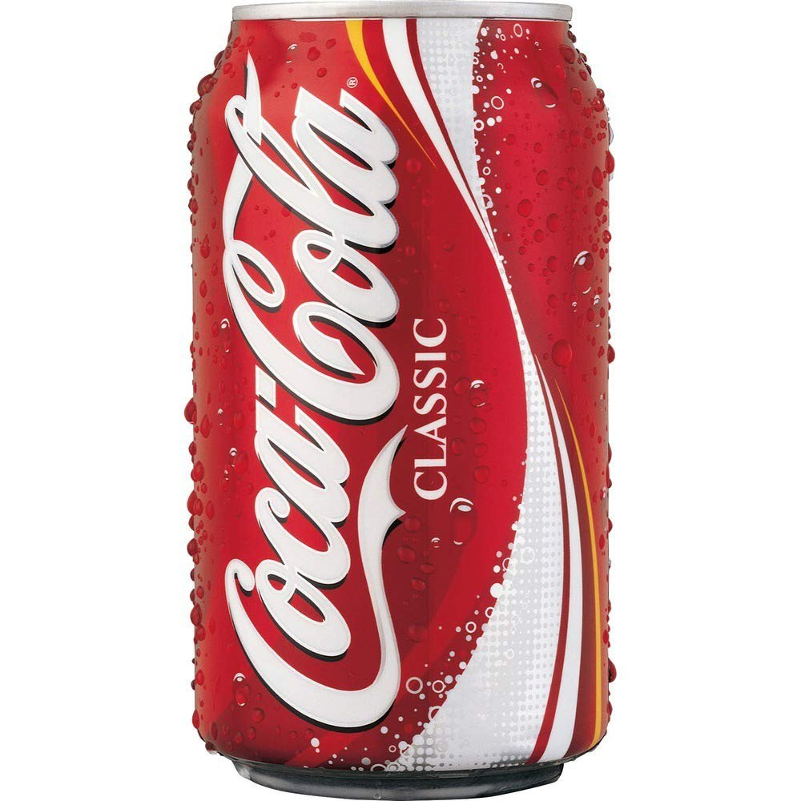
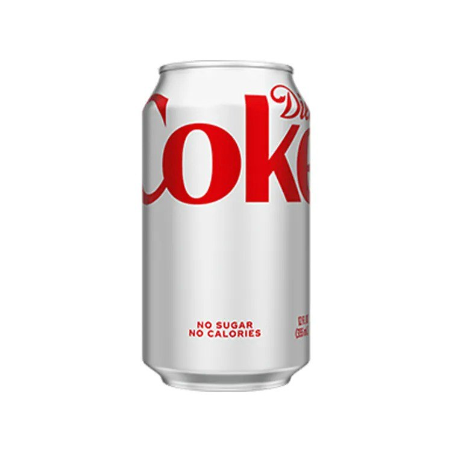

COKES

The series boasts a large ensemble cast, including the Straw Hat Pirates and a wide range of allies and adversaries, each with distinct personalities, backstories, and development..

A low-calorie version of Coca-Cola, sweetened with artificial sweeteners like aspartame. It offers a similar taste to Coca-Cola Classic but with fewer calories.